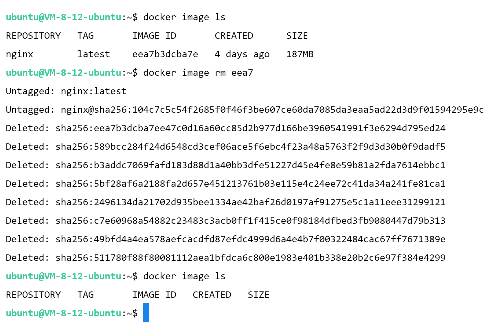

镜像的创建、管理和发布
镜像
Docker 镜像是用于构建和运行容器的静态模板。镜像包含了运行应用程序所需的所有内容，包括代码、运行时、系统工具、库文件和依赖项：
- 镜像层：Docker 镜像由一系列称为“层”的文件系统构成，每一层代表一个差异。层级结构使镜像变得高效、可共享和轻量级。
- 不可修改性：镜像是不可修改的。一旦创建，镜像的内容不会发生变化。如果要更改应用程序或配置，需要基于现有镜像创建新的镜像。
- 分层结构：镜像的分层结构允许镜像共享共同的层，从而节省磁盘空间和带宽。这种分层结构还使得构建和分发镜像变得更加高效。
- Dockerfile：Docker 镜像通常使用 Dockerfile 进行构建。Dockerfile 是一个包含构建步骤的文本文件，可以在其中定义如何构建镜像，包括基础镜像、应用程序配置、运行命令等。
- 标签（Tags）：镜像可以有不同的标签，用于标识不同版本或配置。例如，
ubuntu:20.04表示 Ubuntu 20.04 版本的镜像。如果不指定标签，默认使用latest标签。 - 仓库（Repositories）：镜像可以保存在仓库中，仓库可以包含多个不同版本的镜像。例如，
ubuntu是一个仓库，其中可以包含多个版本的 Ubuntu 镜像。 - 构建镜像：使用
docker build命令可以根据 Dockerfile 构建镜像。该命令会执行 Dockerfile 中定义的指令，创建一个新的镜像。 - 获取镜像：使用
docker pull命令可以从 Docker Hub 或其他镜像仓库获取镜像。镜像可以被下载到本地以供后续使用。 - 发布和共享：可以将自己创建的镜像上传到 Docker Hub 或其他镜像仓库，以便与其他人共享。这在团队协作和分发应用程序时非常有用。
总之，Docker 镜像是构建和分发容器化应用程序的基础。通过定义镜像中应用程序的环境和配置，Docker 镜像实现了应用程序的可移植性和一致性。
镜像的基本操作
镜像的拉取
1 | docker image pull [OPTIONS] NAME[:TAG|@DIGEST] |
docker image pull,docker pull
Download an image from a registry
镜像的查看
1 | docker image ls [OPTIONS] [REPOSITORY[:TAG]] |
docker image lsdocker image listdocker images
List images
镜像的删除
1 | docker image rm [OPTIONS] IMAGE [IMAGE...] |
docker image rmdocker image removedocker rmi
Remove one or more images

镜像的导出和导入
1 | docker image save [OPTIONS] IMAGE [IMAGE...] |
docker image savedocker save
Save one or more images to a tar archive (streamed to STDOUT by default)
1 | docker image load [OPTIONS] |
docker image loaddocker load
Load an image from a tar archive or STDIN
Dockerfile
Dockerfile 是一个文本文件，它包含了一系列用于构建 Docker 镜像的指令和配置。通过编写 Dockerfile，可以定义容器镜像的构建过程，从而创建一个自定义的镜像，其中包含的应用程序、依赖项和配置。
镜像构建和分享
1 | docker buildx build [OPTIONS] PATH | URL | - |
docker buildx builddocker buildx b
1 | docker image tag SOURCE_IMAGE[:TAG] TARGET_IMAGE[:TAG] |
docker image tagdocker tag
Create a tag TARGET_IMAGE that refers to SOURCE_IMAGE
推送到 Docker Hub
1 | docker login [OPTIONS] [SERVER] |
Log in to a registry.
If no server is specified, the default is defined by the daemon.
1 | docker image push [OPTIONS] NAME[:TAG] |
docker image pushdocker push
Upload an image to a registry
1 | docker logout [SERVER] |
Log out from a registry.
If no server is specified, the default is defined by the daemon.
本博客所有文章除特别声明外，均采用 CC BY-NC-SA 4.0 许可协议。转载请注明来自 梁嘉嘉の博客！